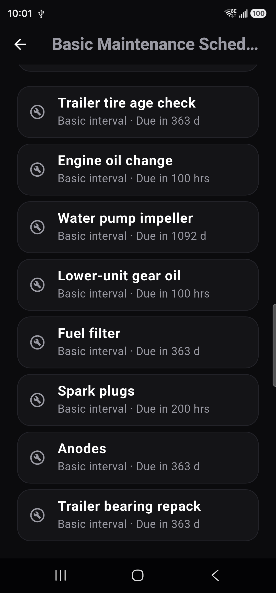

New boat owners
You just bought a boat. AftLog walks you through setup, safety gear, and your first season — you're not supposed to know all this yet.
AftLog tracks maintenance, fuel, trips, and costs for your boat — then turns it into clear, simple insights.
New to boating? AftLog teaches you your boat, checks you're ready before you launch, and tells you what to do when something's wrong.
Built for pleasure craft and fishing boats in Canada + USA. Works without a signal, no subscription, no ads.

You just bought a boat. AftLog walks you through setup, safety gear, and your first season — you're not supposed to know all this yet.
You trailer, launch, and fish on weekends. AftLog keeps your checklists, fuel, and service history in one place.
You care about costs, range, and reliability. AftLog's analytics sheets and Web Portal give you the full picture.
AftLog builds a smart maintenance schedule using your engine manual, usage, region, and season.
Free: basic maintenance schedule and reminders. Pro: the full smart planner — intervals from your engine manual and usage.

AftLog turns your logs into real numbers — range, costs, and usage patterns — so you can plan with confidence.
Log on your phone, review on your laptop. The Web Portal gives you a bigger canvas for planning trips, tracking costs, and exporting data.

Boat Health Score, next task, and fuel range.

Launch, spring prep, winterization, and more.
Trips, distance, hours, fuel, cost, and trends.

Per-boat health, hours, fuel, and compliance.
Feedback from early testers and preview users.
"Perfect for keeping track of fuel and service. My Lund 1650 has never been easier to manage."
"The checklists are worth the price alone. Launching and retrieving is stress-free now."
"Love the analytics sheets. Seeing my real fuel burn and range is a game changer."
Want to share your experience? Leave a review.
Launch price is $29. Waitlist members lock it in — it may rise after.
We're building AftLog now. Join the waitlist and we'll email you the day it's ready — plus early access to the seasonal checklists while you wait. New boaters welcome — AftLog is built to teach, not just track.
You're on the list! One email at launch — nothing else. We'll see you at the dock.
Something went wrong — please try again.
No spam. One email at launch. Unsubscribe anytime.
Yes. AftLog works entirely on your device. You can log trips, fuel, maintenance, and checklists anywhere — lakes, rivers, or offshore — and everything syncs when you're back online.
AftLog supports local JSON backups and exports to CSV/PDF. You can also send your log to the Web Portal for a bigger view on your laptop.
Just restore your backup on the new device. All your logs, photos, and history come with you.
Yes. The Free tier supports one boat, and the Pro tier supports multiple boats with shared analytics and Portal access.
Your data stays on your device unless you choose to sync or export it. No account is required, and your logs are never mined or sold.
Yes. You can log engine hours manually, track service intervals, and see usage patterns over time.
No. The free tier builds a basic schedule from your saved intervals. The Pro tier uses your engine manual to extract manual-based intervals and page references.
No. AftLog only reads your PDF and stores a separate search index — your manual file is never changed.
Yes. Scheduling, manual indexing, and recommendations all run on your device. Nothing is sent to a server.
Yes. The interval review lets you accept, edit, or reject each extracted interval before it enters your plan.
Yes. AftLog uses your real trip and fuel history to calculate average burn, cost per hour, and estimated range.
Yes. Pro users can generate clean resale PDFs with service history, trip summaries, and maintenance logs.
Yes. You can attach photos, invoices, serial numbers, and part details to your boat and its service entries.
Yes. AftLog includes launch, retrieve, towing, winterization, compliance, and float plan checklists.
Yes. You can log fuel, distance, hours, notes, and photos for every trip. AftLog works great for anglers.
Yes. The Web Portal gives you a larger screen for analytics and exports — you send it a bundle from the app, no account needed.
Multiple boats, Web Portal access, advanced analytics sheets, backup/restore, and resale exports.
Yes. Early adopters can lock in Pro access for a one-time $29 price.
AftLog is designed for pleasure craft and fishing boats, but many small operators use it successfully.
Still have questions? Contact us — we're happy to help.
Your feedback helps us improve AftLog for all boat owners.
If you have questions about AftLog, the Web Portal, or Pro features, send us a message: